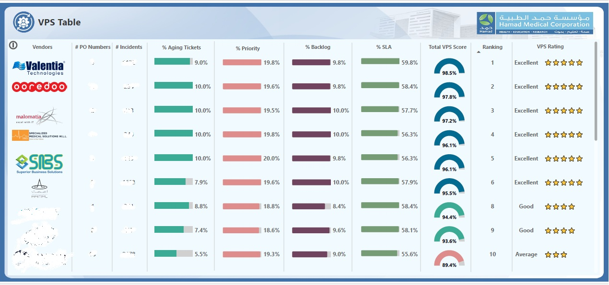

Healthcare ITSM Analytics – HMC
Power BI analytics for healthcare IT service management, featuring SLA compliance, incident lifecycle analysis, backlog monitoring and service performance KPIs.
Power BI · DAX · Semantic Models · Star Schema · ITSM
View Project
Banking KPI Dashboard
Monitor financial KPIs, monthly trends and business performance using sample banking data.
Power BI · DAX · Data Modeling
View projectInsurance Analytics
Explore claims, processing times, trends and operational performance using sample insurance data.
Power BI · Power Query · SQL
View projectMicrosoft Fabric Data Warehouse
Demonstrate Bronze, Silver and Gold layers, ETL pipelines, metadata-driven ingestion and dimensional modeling.
Fabric · PySpark · SQL · Lakehouse
View project